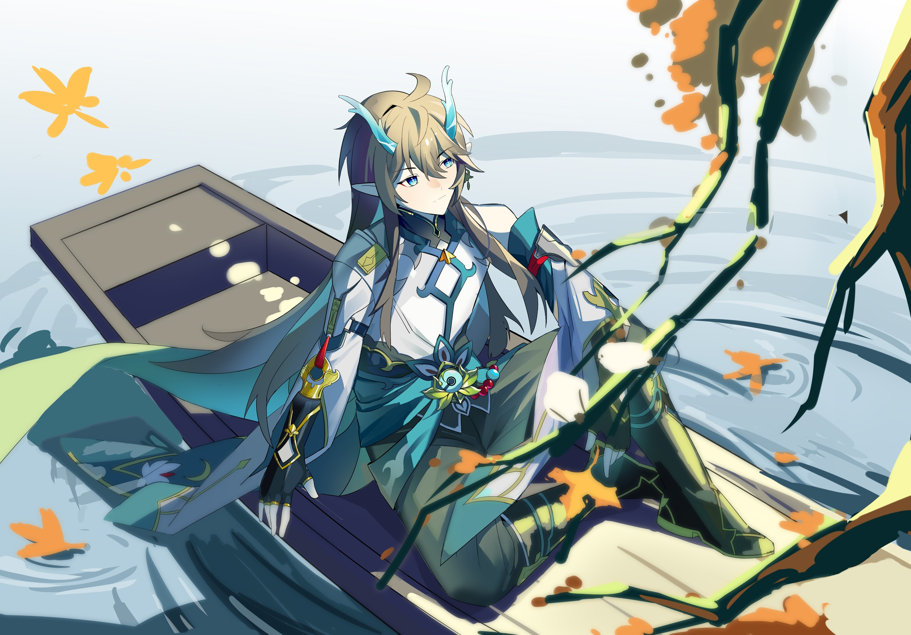
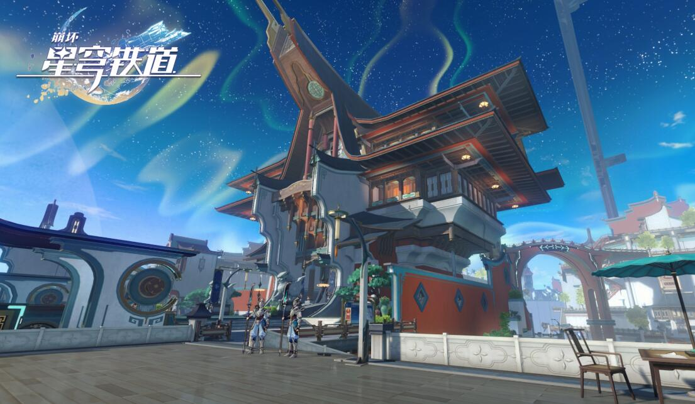

主页
羽毛球
围棋
崩坏星穹铁道
音乐

丹恒·饮月在《崩坏星穹铁道》中是一个充满神秘色彩的角色。他外表冷静、沉稳，内心却承载着复杂的情感和沉重的使命。作为仙舟罗浮的龙尊，他表现出了强烈的责任感和对族人的深切关怀。饮月的形象是一个典型的领导者，既有着坚定的意志，也有着对过去的深刻反思。他的行为和选择常常体现出对正义和族群未来的深思熟虑，使他成为一个在剧情中极具深度和魅力的人物。

崩坏星穹铁道中的仙舟是一个充满中式元素的地方。在这里，开拓者与仙舟罗浮的将军一起讨伐了绝灭大君幻胧。但是丰饶孽物始终在暗中伺机而动，开拓者在这里经历了许多，有趣的和惊险的都有。但对咱开拓者而言，困难只不过是自己手中球棒的败将。